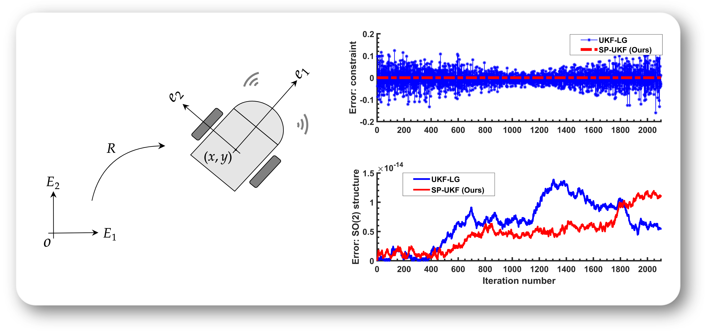
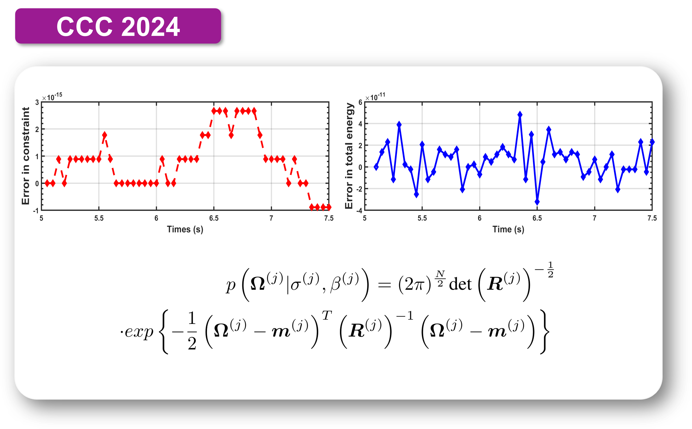
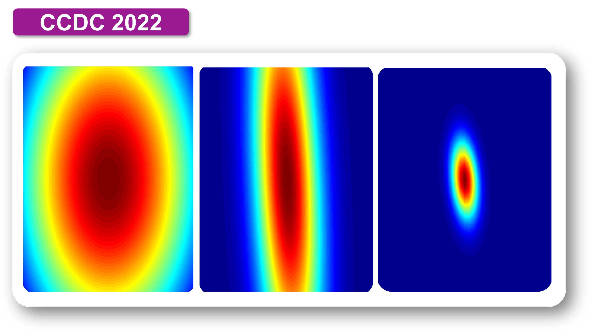

Publications
Journal Papers
 |
Physics-Informed Gaussian Process Learning on Lie Groups Journal of Guidance, Control, and Dynamics, 48 (11), pp. 2654-2662, 2025. We introduce a physics-informed Gaussian process learning method for mechanical systems on Lie groups and on a special class of homogeneous manifolds based on discrete mechanics theory. |
 |
Variational Unscented Kalman Filter on Matrix Lie Groups Automatica, 172: 111995, 2025 (Regular Paper). We propose a family of computationally efficient unscented Kalman filters (UKF-Vs) for mechanical systems on matrix Lie groups. |
|  | Structure-Preserving Unscented Kalman Filter for Planar Mobile Robots IEEE Control Systems Letters, vol. 9, pp. 2157-2162, 2025. We introduce a structure-preserving filtering method (called SP-UKF) for constrained planar mobile robots. The proposed SP-UKF is energy-conserving, constraint-preserving, and manifold-structure-preserving. |
 |
Reduced Dynamics and Geometric Optimal Control of Nonequilibrium Thermodynamics: Gaussian Case Automatica, 164: 111626, 2024 (Regular Paper). We study the geometric structures of n-DOF Gaussian distributions, and we propose a geometric optimal control algorithm for minimum-energy optimal control problem of Gaussian distributions. |
Conference Papers
 |
Variational Principle for Stochastic Nonholonomic Systems Part II: Stochastic Nonholonomic Integrator In: Nielsen, F., Barbaresco, F. (eds) Geometric Science of Information (GSI 2025), Saint-Malo, France. Lecture Notes in Computer Science, vol 16034, pp. 225-233. Springer, Cham, 2026. We propose stochastic discrete variational principles for stochastic nonholonomic systems and construct the associated stochastic nonholonomic integrator based on Hamel's formalism. The links between the proposed approach and existing geometric numrical integration methods (such as Verlet method, sysmplectic-momentum integrator, and Hamel integrator) are analyzed. |
 |
Variational Principle for Stochastic Nonholonomic Systems Part I: Continuous-Time Formulation In: Nielsen, F., Barbaresco, F. (eds) Geometric Science of Information (GSI 2025), Saint-Malo, France. Lecture Notes in Computer Science, vol 16034, pp. 204-213. Springer, Cham, 2026. We introduce stochastic variational principles for stochastic unconstrained and stochastic nonholonomically constrained systems based on Hamel's formalism. An interesting example of the stochastic rolling disk is given to demonstrate the effectivness of the proposed approach. |
 |
Multisymplectic Unscented Kalman Filter for Geometrically Exact Beams In: Nielsen, F., Barbaresco, F. (eds) Geometric Science of Information (GSI 2023), Saint-Malo, France. Lecture Notes in Computer Science, vol 14072. Springer, Cham, 2023. We propose a geometric estimation algorithm for geometrically exact beams based on geometric mechanics and classical field theory. The structure-preserving property of the proposed filter is demonstrated by numerical results. |
|  | AStructure-Preserving Learning Scheme on SO(3) 43rd IEEE Chinese Control Conference (CCC), Kunming, China, pp. 5149-5152, 2024. We propose a physics-guided Gaussian learning method for SO(3) attitude dynamics prediction. Numerical results are given to demonstrate the structure-preserving properties of the proposed method, such as energy conservation, constraint preservation, and geometry preservation. |
 |
A Physics-Informed Gaussian Process Regression Algorithm for The Dynamics of The Planar Pendulum 42nd IEEE Chinese Control Conference (CCC), Tianjin, China, pp. 5163-5167, 2023. We introduce a Gaussian process regression algorithm for the prediction of planar pendulum dynamics. Numerical results show that the proposed method preserves some key numerical quantities of the system, including the numerical energy and the physical length of the pendulum. |
|  | A Statistical Dynamical Algorithm for Gaussian Multi-Agent Systems Under Hamel's Formalism 34th IEEE Chinese Control and Decision Conference (CCDC), Hefei, China, pp. 1344-1349, 2022. We study the geometric structure of n-DOF Gaussian distributions (normal distributions) using Lie group and homogeneous manifold theories. In particular, the metric matrix and the Lagrangian of the system is determined and the discrete dynamics is derived using a discrete variational principle. The resulting geometric integrator for n-DOF Gaussian distributions exhibits properties of energy conservation compared with Runge-Kutta method. |